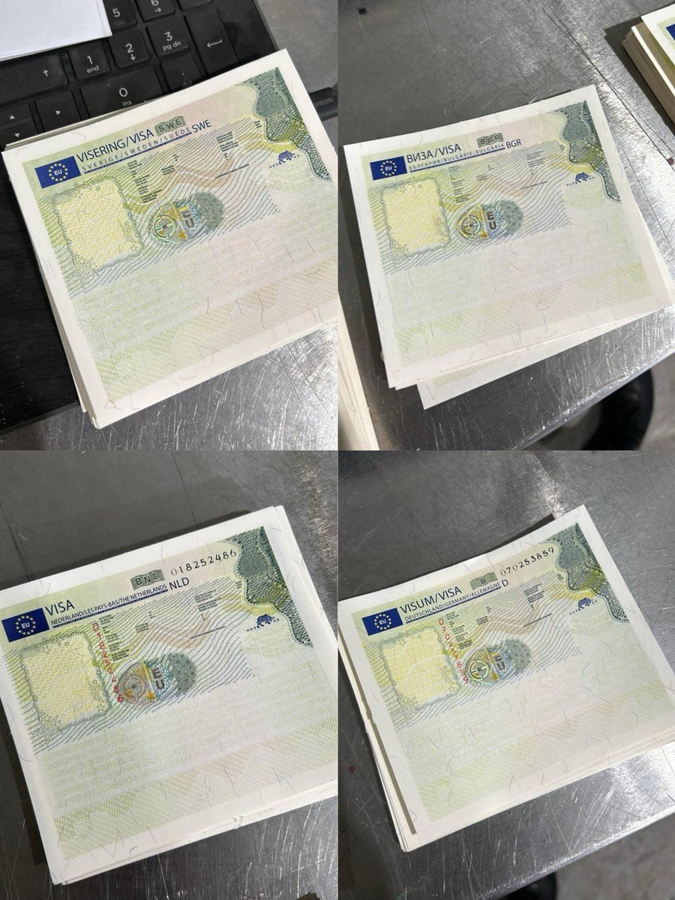
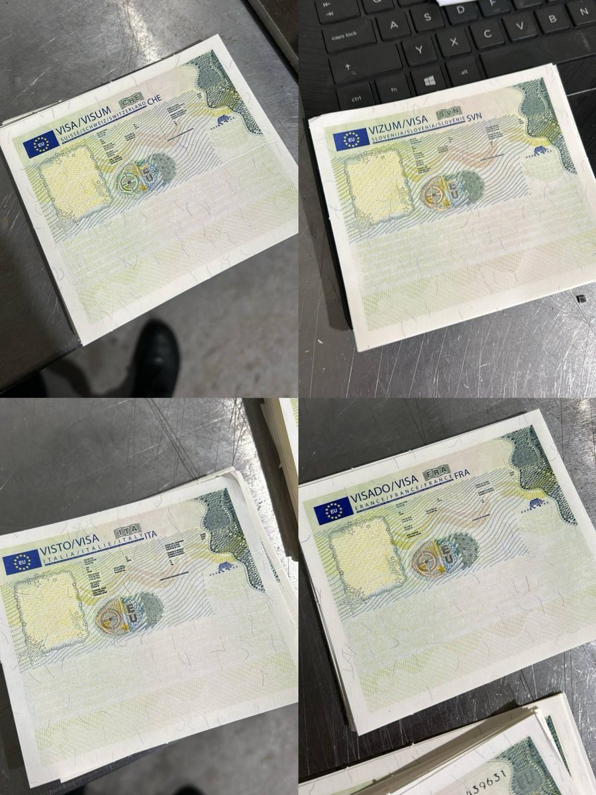

奶昔🥤
@realNyarime
@Aureliax17QwQ 我也想申请，马上就去🥺


奶昔🥤
@realNyarime
听说你在办申根签证？
是哪个国家的，怎么就开始吃上菠萝披萨了
给我留一块我也想吃🥺 https://t.co/DOJVJu16vV https://t.co/KDWZ5Gzecw
海月水母x17🍥
@Aureliax17QwQ
嘿嘿！17的法签过了！
要准备5月份的欧洲旅行啦～ https://t.co/qYDjykBHZC